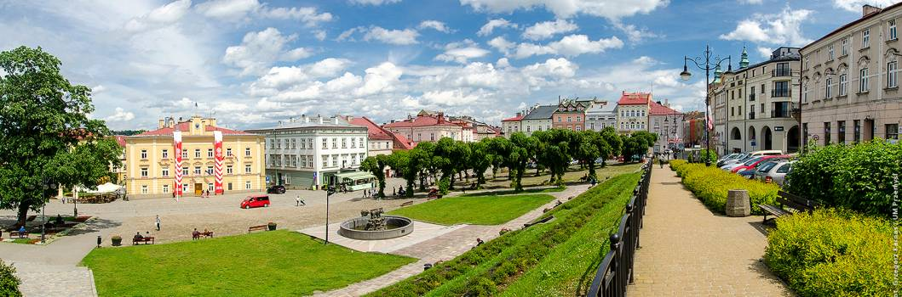

Powrót do strony głównej

Kamienice w Rynku z XVI i XVII-wiecznym rodowodem skupione w trzech pierzejach z czterech niegdyś istniejących.
W większości kamienic przebudowanych w XIX wieku zachowały się oryginalne podcienia.
Uwagę zwraca również sam unikalny pochyły Rynek, na którym stał renesansowy ratusz rozebrany w 1812 roku przez zaborców.
Recenzja miejsca